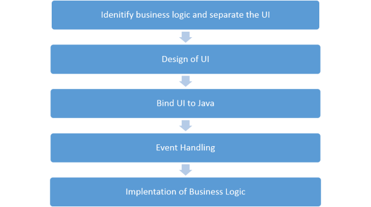

Porting an Android Application to Apple iOS Platform Using Multi-OS Engine¶
This section provides additional tutorials for the Multi-OS Engine.
This article provides you an overview of steps required for porting an existing Android app to the iOS device using the Intel’s Multi-OS Engine Technology Preview.
The process requires a local Apple macOS development machine with Android Studio and Multi-OS Engine software installed. You can also use Apple Xcode* software to implement the UI of the app.
To get started, create a new project for Multi-OS Engine module with a local build configuration in Android Studio. For more details on how to create a project and set up build configurations, see the Creating Hello World Application for Android and iOS Platforms topic.
The porting process contains the following steps:
Identifying the App Logic and Separate the UI¶
Start the process with dividing the entire functionality of your app into common and UI modules. A common module implements the logic of the application that is common for both iOS and Android platforms. Each UI module implements specific UI functionality for a certain platform. This approach shares the common functionality between the Android and iOS modules.
Designing UI Using Multi-OS Engine¶
The Multi-OS Engine provides support for defining the layout and UI for your Apple iOS applications, by using Apple Xcode* Interface Builder and generating Java bindings in Android Studio.
Binding UI to Java¶
If you use the Xcode Storyboard for designing UI, you need to generate Java* bindings for all UI controls and actions that you’ve created in Xcode. See Creating a UI Using an Apple Xcode Storyboard for more information.
Adding Event Handling¶
If you have an event handling associated with any component, you can create instances of the event based classes that need to be assigned an action in order to respond to some event.
Implementing App’s Logic¶
Create the common module that implements the logic of your app, so that the iOS and Android modules can share this platform-independent functional. See Creating a Common Module for Android and iOS for more information.